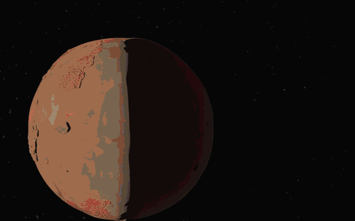
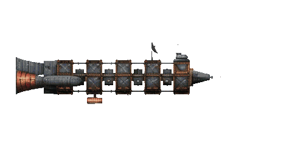

Nouveaux essais animés : Maître, centrale et Ludion →
Atelier · tableau de suivi et étude des animations ↗
Atlas et chantiers — Estran, Ressac, Havre → · Atelier des modèles 3D →
Voir les trois modèles de bâtiments — Blender et vues fixes →
Tout ce que la nuit du 16 août 2026 a peint. Le banc d'essai rejoue le plan du passage à la taille exacte du jeu — 320×200, agrandi trois fois, sans lissage. Choisissez un vaisseau et un fond : la traversée se rejoue aussitôt.
⚠️ Le Ludion passe tuyère en avant, et ce n'est pas une inversion : il freine pour se mettre en orbite, donc il se retourne et pousse contre sa propre course. Le moteur précède la coque.


Le montage qui les a produits : dreamshaper-8 +
normale 0,75 + contours 0,55, 768×384, 28 pas. Puis
masquer.py pour le détourage et quantifier.py
pour la palette.
Détourés et passés à la palette. Seule la graine et l'éclairage demandé changent.
Une sphère est le cas où la profondeur est le bon contrôleur — tout son relief va vers la caméra —, exactement là où elle échouait sur un vaisseau vu de profil.
Cinq campagnes ont été nécessaires. Ces deux-là ne sont pas encore bonnes et je le dis plutôt que de les présenter comme un choix : la matière est là, la densité de détail aussi, mais le contrôle reste trop rigide — le modèle repasse les boîtiers au lieu de peindre entre eux.
Même géométrie, même graine, même montage : seule la fin du sujet change. C'est la démonstration que la forme est tenue par les cartes de contrôle et que le texte ne décide plus que de la peau. Les styles sont décrits par leur technique et non par un nom d'artiste — le projet doit rester diffusable.
assets/prologue/ludion.png ou estran-lest.png.